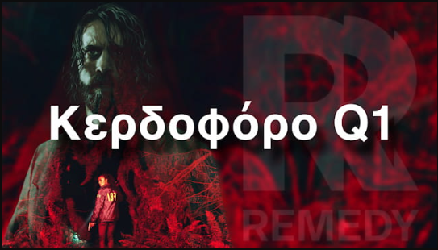
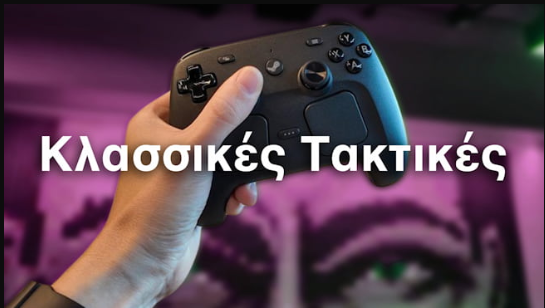

News
News
Κεδοφόρο Πρώτο Τρίμηνο (Q1) Για Την REMEDY, Παρά ΤΑ Χαμηλά Της Έσοδα
Η Remedy Entertainment δημοσίευσε τα αποτελέσματα κερδών της για το πρώτο τρίμηνο του οικονομικού έτους 2026, που εκτείνεται από τον Ιανουάριο του 2026 έως τον Μάρτιο του 2026. Η εταιρία ανακοίνωσε ένα 'κερδοφόρο πρώτο τρίμηνο' (Q1), παρά τις μειώσεις στα έσοδα και τα λειτουργικά κέρδη της. Συγκεκριμένα, τα έσοδα για το πρώτο τρίμηνο ανήλθαν σε 13,1 εκατομμύρια ευρώ, μειωμένα κατά 1,9% σε ετήσια βάση, ...
από User στις 06/05/2026 12:32 μμ
Gaming News

NewsΚερδοφόρο Πρώτο Τρίμηνο (Q1) Για Την REMEDY, Παρά ΤΑ Χαμηλά Της Έσοδα
από User στις 06/05/2026 12:32 μμ

NewsΤο Steam Controller Εξαντλήθηκε Εντός 30 Λεπτών, Με τους Scalpers Να το μεταπωλούν Σε... Τριπλάσιες Τιμές
από User στις 05/05/2026 12:28 μμ
 News
News
H Playstation Απαντάει Σχετικά Με Το DRM 30 Ημερών – 1 Φορά Εφάπαξ Έλεγχος
από User στις 30/04/2026 10:47 πμ
 News
News
Το PlayStation Φαίνεται Να Προσθέτει ‘DRM’ 30 Ημερών Σε Όλα Τα Ψηφιακά Παιχνίδια.
από User στις 29/04/2026 10:33 πμ
News
Το Xbox Μειώνει Τις Τιμές Του Game Pass Και Αφαιρεί Τα Call of Duty Από Day 1
από User στις 22/04/2026 1:07 μμ
 News
News
Ο Shuhei Yoshida Λέει ‘Οτι ο Jim Ryan Τον Απέλυσε “Επειδή δεν… τον άκουγε”
από Lefteris στις 21/04/2026 12:18 πμ